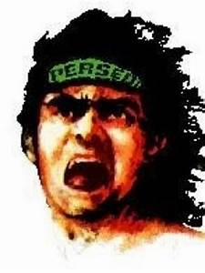

1.Supporter Jawa Timur
Istilah bonek pertama kali dimunculkan oleh Harian Pagi Jawa Pos tahun 1989[butuh rujukan] untuk menggambarkan fenomena suporter Persebaya 1927 yang berbondong-bondong ke Jakarta dalam jumlah besar. Secara tradisional, Bonek adalah suporter pertama di Indonesia yang menggambarkan fenomena away supporters (pendukung sepak bola yang mengiringi tim pujannya bertanding ke kota lain) seperti di Eropa, saat dulu memang belum ada suporter yang away dengan sangat terorganisir seperti Bonek.[butuh rujukan] Dalam perkembangannya, ternyata away supporters juga diiringi aksi perkelahian dengan suporter tim lawan. Tidak ada yang tahu asal-usul, Bonek menjadi radikal dan anarkis. Jika mengacu tahun 1988, saat 25 ribu Bonek berangkat dari Surabaya ke Jakarta untuk menonton final Persebaya 1927 - Persija, tidak ada kerusuhan apapun. Bonek juga memiliki hubungan yang sangat baik dengan []Viking Persib Club]] supporter klub []Persib Bandung]]..

2.Supporter jawa tengah
Pendukung Persis dijuluki sebagai "Laskar Samber Nyawa". Persis memiliki suporter fanatik dan atraktif yang disebut Pasoepati (Pasukan Soeporter Solo Sejati)..
3. Supporter jawa barat
Bobotoh adalah sebutan untuk pendukung klub sepak bola Persib Bandung. Nama ini berasal dari bahasa Sunda yang berarti orang-orang yang mendorong atau membangun semangat bagi orang lain. Dalam bobotoh ada beberapa kelompok pendukung seperti Viking dan Bomber dan jenis lainnya seperti Bobotoh Oriental, Hooliganisme, Ultras, Casuals. Tapi nama kesatuan mereka tetap Bobotoh sebagai nama suporter Persib Bandung.